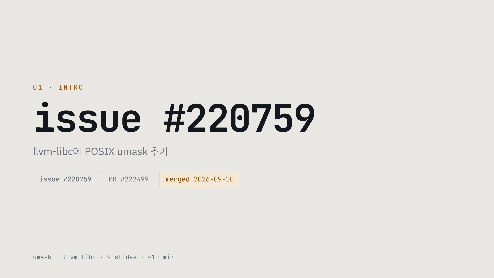
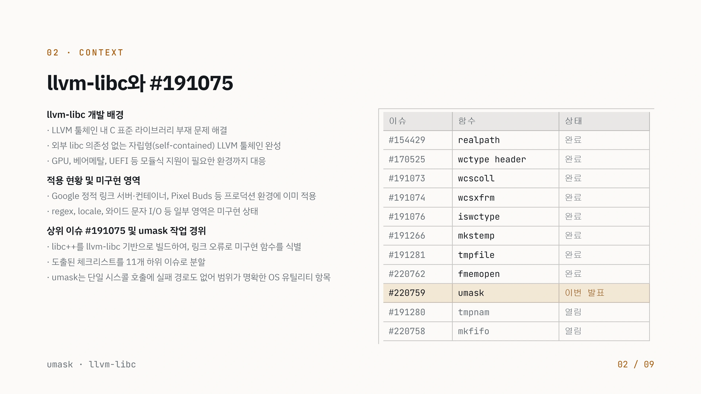
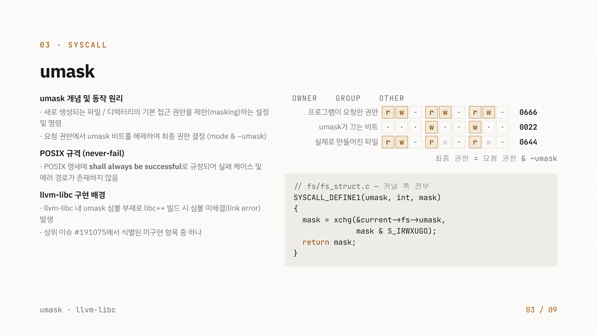
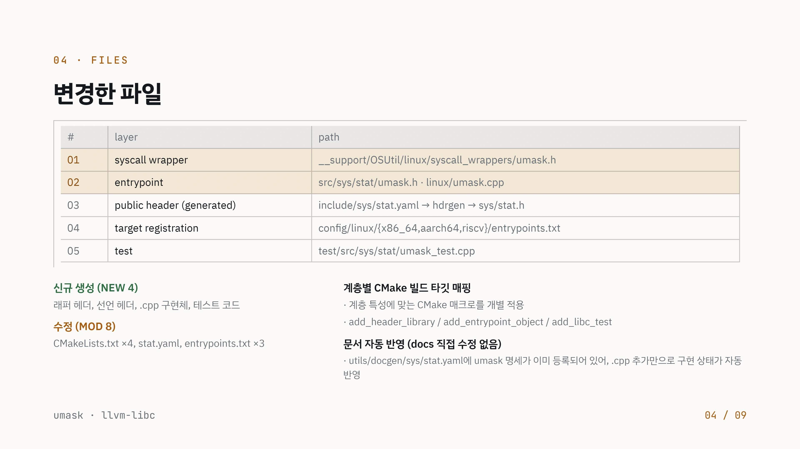
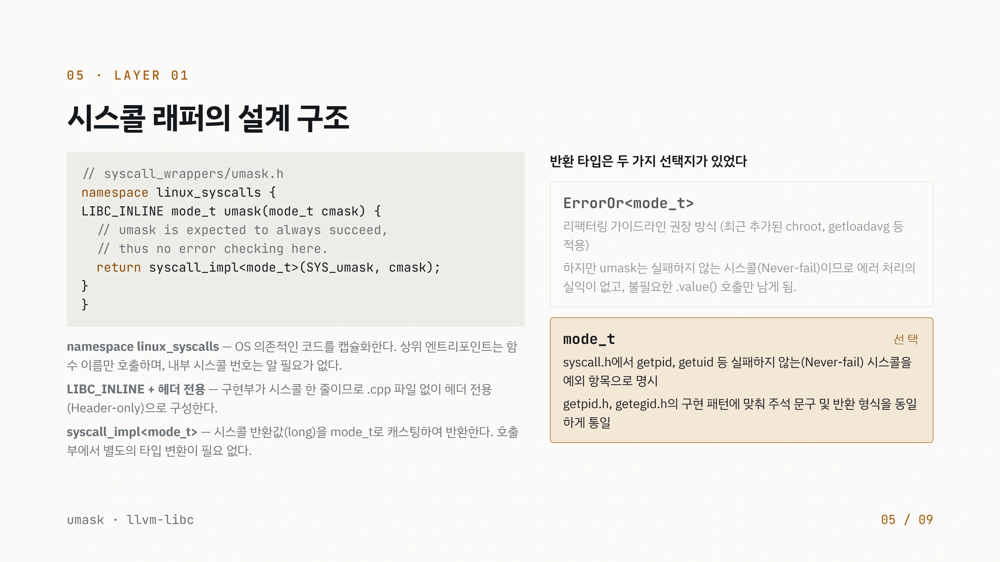
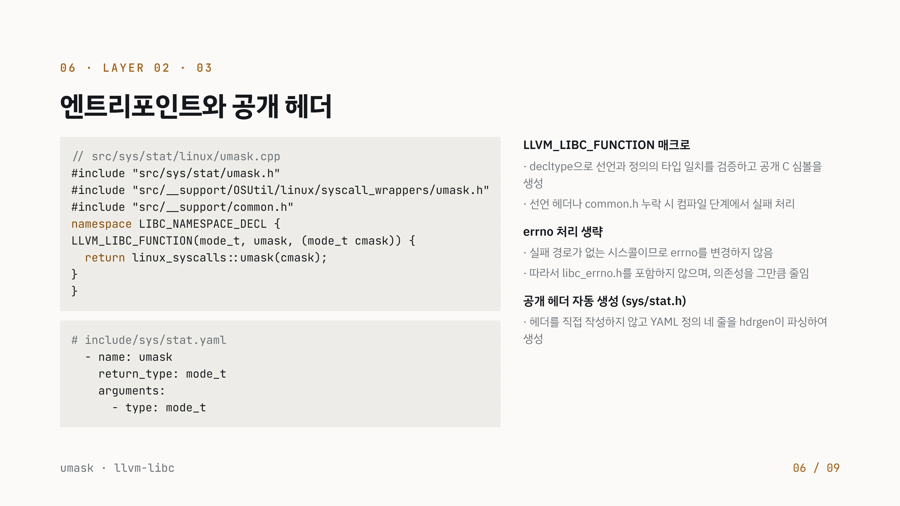
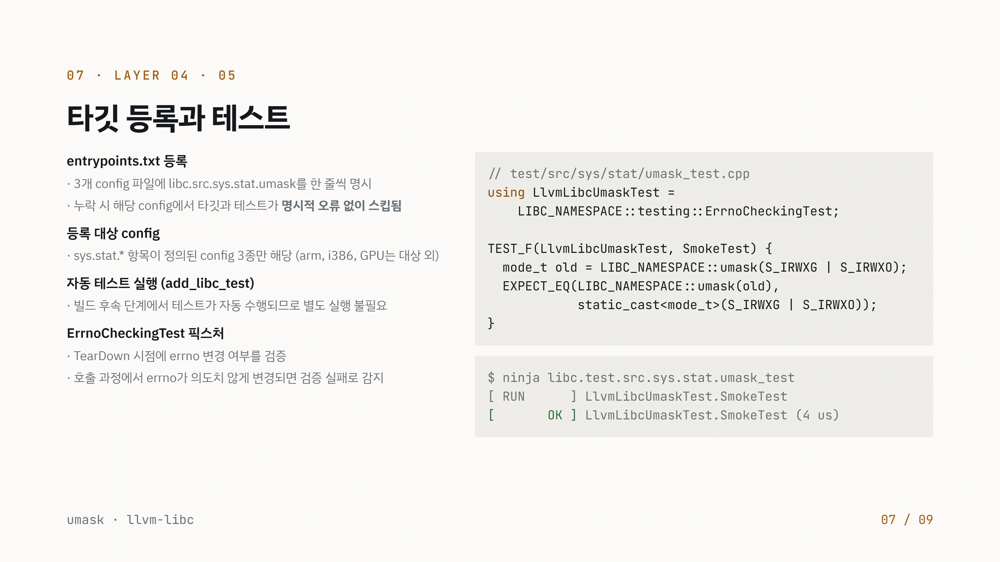
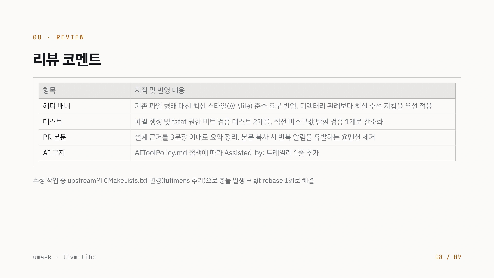
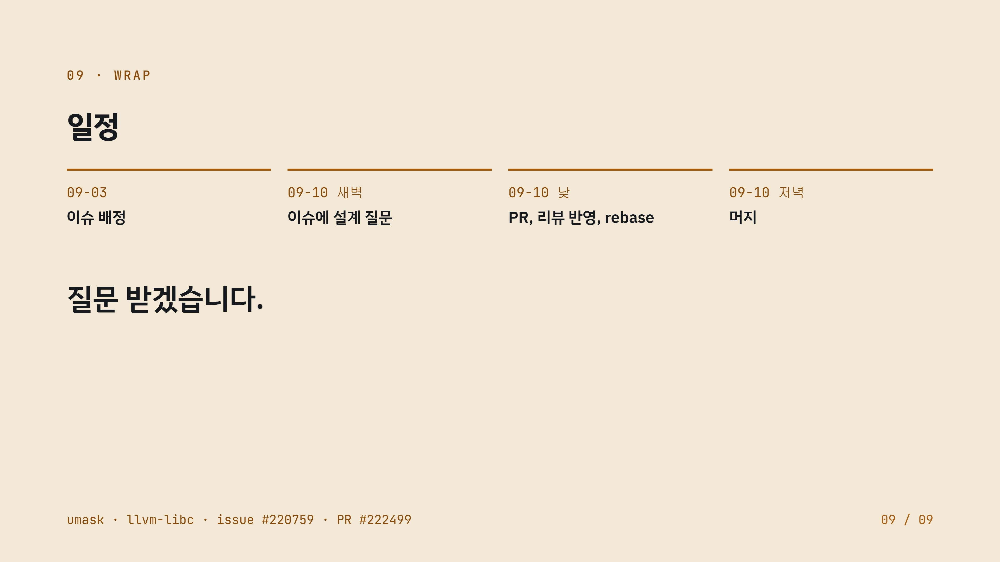

llvm-libc의 umask를 여러 계층에 연결하기
syscall wrapper 하나에서 끝내지 않고 공개 헤더, 타깃 등록, 빌드와 테스트까지 API를 연결한다.
issue_220759_.pdf의 전체 내용입니다. 설명·코드·표·검증 기록을 생략하지 않고 옮겼습니다. 그림 안의 문자 인식 결과에는 기호 오류가 있을 수 있어 이미지도 함께 제공합니다.
이 문서의 목차
01 · intro / issue #220759 / llvm-libc POSIX umask
01 • INTRO
issue #220759
llvm-libc에 POSIX umask 추가
issue #220759 merged 2026-09-10 PR #222499
umask • llvm-libc • 9 slides • ~10 min
PDF 문자층의 내용도 확인하기
01 · intro
issue #220759
llvm-libc POSIX umask
issue #220759
PR #222499
merged 2026-09-10
umask · llvm-libc · 9 slides · ~10 min
페이지 배치·기호·도식 확인하기
아래 본문은 문자 인식으로 옮겼습니다. 원래 슬라이드를 함께 제공합니다.


02 · context / llvm-libc #191075 / llvm-libc
02 • CONTEXT
llvm-libc와 #191075
llvm-libc 개발 배경
• LLVM 툴체인 내 C 표준 라이브러리 부재 문제 해결
• 외부 libc 의존성 없는 자립형(self-contained) LLVM 툴체인 완성
• GPU, 베어메탈, UEFI 등 모듈식 지원이 필요한 환경까지 대응
적용 현황 및 미구현 영역
• Google 정적 링크 서버•컨테이너, Pixel Buds 등 프로덕션 환경에 이미 적용
• regex, locale, 와이드 문자 I/O 등 일부 영역은 미구현 상태
상위 이슈 #191075 및 umask 작업 경위
• libc++를 llvm-libc 기반으로 빌드하여, 링크 오류로 미구현 함수를 식별
• 도출된 체크리스트를 11개 하위 이슈로 분할
• umask는 단일 시스콜 호출에 실패 경로도 없어 범위가 명확한 OS 유틸리티 항목
umask • LLvm-libc
이슈
#154429
#170525
#191073
#191074 #191076
#191266
#191281
#220762
#220759
#191280
#220758
함수
realpath
wctype header WCScOLL wcsxfrm iswctype
mkstemp tmpfile fmemopen
umask
tmpnam mkfifo
상태 완료
완료
완료
완료
완료
완료
완료
완료
이번 발표
열림
열림
02 / 09
PDF 문자층의 내용도 확인하기
02 · context
llvm-libc #191075
llvm-libc
· LLVM C
· libc (self-contained) LLVM
· GPU, , UEFI
· Google · , Pixel Buds
· regex, locale, I/O
#191075 umask
· libc++ llvm-libc ,
· 11
· umask OS
umask · llvm-libc
#154429
#170525
#191073
#191074
#191076
#191266
#191281
#220762
#220759
#191280
#220758
realpath
wctype header
wcscoll
wcsxfrm
iswctype
mkstemp
tmpfile
fmemopen
umask
tmpnam
mkfifo
02 / 09
페이지 배치·기호·도식 확인하기
아래 본문은 문자 인식으로 옮겼습니다. 원래 슬라이드를 함께 제공합니다.


03 · syscall / umask / umask owner group other
03 • SYSCALL
umask
umask 개념 및 동작 원리
• 새로 생성되는 파일 / 디렉터리의 기본 접근 권한을 제한(masking)하는 설정
및 명령
• 요청 권한에서 umask 비트를 해제하여 최종 권한 결정 (mode &~umask)
POSIX 규격(never-fail)
• POSIX 명세에 shall always be successful로 규정되어 실패 케이스 및
에러 경로가 존재하지 않음
llvm-libc 구현 배경
• llvm-libc 내 umask 심볼 부재로 libc++ 빌드 시 심볼 미해결(link error)
발생
• 상위 이슈 #191075에서 식별된 미구현 항목 중 하나
umask • LLvm-libc
OWNER GROUP OTHER
프로그램이 요청한 권한
umask가 끄는 비트 실제로 만들어진 파일
『w W 0666
w w 0022
w- 『 w- 0644
최종 권한 = 요청 권한 & ~umask
// fs/fs_struct.c —
SYSCALL_DEFINE1(umask, int, mask)
{
mask = xchg(¤t->fs->umask,
mask & S_IRWXUGO);
return mask;
}03 / 09
PDF 문자층의 내용도 확인하기
03 · syscall
umask
umask
· / (masking)
· umask (mode & ~umask)
POSIX (never-fail)
· POSIX shall always be successful
llvm-libc
· llvm-libc umask libc++ (link error)
· #191075
umask · llvm-libc
owner
group
other
r w
umask · · ·
r w
r w
w · ·
r w
r w
w · ·
r w
0666
0022
0644
= & ~umask
// fs/fs_struct.c — SYSCALL_DEFINE1(umask, int, mask)
{mask = xchg(¤t->fs->umask, mask & S_IRWXUGO);
return mask;}
03 / 09
페이지 배치·기호·도식 확인하기
아래 본문은 문자 인식으로 옮겼습니다. 원래 슬라이드를 함께 제공합니다.


04 · files / # layer path / 01 syscall wrapper __support/OSUtil/linux/syscall_wrappers/umask.h
04 • FILES
변경한 파일
#
01
02
03
04
05
layer
syscall wrapper
entrypoint
public header (generated)
target registration
test
신규 생성 (NEW 4) 래퍼 헤더, 선언 헤더, .cpp 구현체, 테스트 코드 수정 (MOD 8) CMakeLists.txt x4, stat.yaml, entrypoints.txt x3
umask • Llvm-libc
path
-_support/Osutil/linux/syscall_wrappers/umask.h
src/sys/stat/umask.h • linux/umask.cpp
include/sys/stat.yaml - hdrgen - sys/stat.h
config/linux/{x86_64,aarch64,riscvY/entrypoints.txt
test/src/sys/stat/umask_test.cpp
계층별 CMake 빌드 타깃 매핑
• 계층 특성에 맞는 CMake 매크로를 개별 적용
• add_header_library / add_entrypoint_object / add_libc_test
문서 자동 반영 (docs 직접 수정 없음)
• utils/docgen/sys/stat.yaml에 umask 명세가 이미 등록되어 있어, .cpp 추가만으로 구현 상태가 자동
반영
04 / 09
PDF 문자층의 내용도 확인하기
04 · files
#
01
02
03
04
05
layer
syscall wrapper
entrypoint
public header (generated)
target registration
test
(NEW 4)
, , .cpp ,
(MOD 8)
CMakeLists.txt ×4, stat.yaml, entrypoints.txt ×3
umask · llvm-libc
path
__support/OSUtil/linux/syscall_wrappers/umask.h
src/sys/stat/umask.h · linux/umask.cpp
include/sys/stat.yaml hdrgen sys/stat.h
config/linux/{x86_64,aarch64,riscv}/entrypoints.txt
test/src/sys/stat/umask_test.cpp
CMake
· CMake
· add_header_library / add_entrypoint_object / add_libc_test
(docs )
· utils/docgen/sys/stat.yaml umask , .cpp
04 / 09
페이지 배치·기호·도식 확인하기
아래 본문은 문자 인식으로 옮겼습니다. 원래 슬라이드를 함께 제공합니다.


05 · layer 01 / // syscall_wrappers/umask.h / namespace linux_syscalls {
05 • LAYER 01
시스콜 래퍼의 설계 구조
// syscall_wrappers/umask.h
namespace linux_syscalls {
LIBC_INLINE mode_t umask(mode_t cmask) {
// umask is expected to always succeed,
// thus no error checking here.
return syscall_impl<mode_t>(SYS_umask, cmask);
}
}namespace linux_syscalls - OS 의존적인 코드를 캡슐화한다. 상위 엔트리포인트는 함 수 이름만 호출하며, 내부 시스콜 번호는 알 필요가 없다. LIBC_INLINE + 헤더 전용 - 구현부가 시스콜 한 줄이므로 .cpp 파일 없이 헤더 전용 (Header-only)으로 구성한다. syscall_impl<mode_t> - 시스콜 반환값(long)을 mode_t로 캐스팅하여 반환한다. 호출 부에서 별도의 타입 변환이 필요 없다.
umask • LLvm-libc
반환 타입은 두 가지 선택지가 있었다
Errororsmode_t> 리팩터링 가이드라인 권장 방식 (최근 추가된 chroot, getloadavg 등 적용) 하지만 umask는 실패하지 않는 시스콜(Never-fail)이므로 에러 처리의 실익이 없고, 불필요한 .value0 호출만 남게 됨.
mode_t 선택 syscallh에서 getpid, getuid 등 실패하지 않는(Never-fail) 시스콜을 예외 항목으로 명시 getpid.h, getegid.h의 구현 패턴에 맞춰 주석 문구 및 반환 형식을 동일 하게 통일
05 / 09
PDF 문자층의 내용도 확인하기
05 · layer 01
// syscall_wrappers/umask.h namespace linux_syscalls { LIBC_INLINE mode_t umask(mode_t cmask) { // umask is expected to always succeed, // thus no error checking here.
return syscall_impl<mode_t>(SYS_umask, cmask);} }
namespace linux_syscalls — OS . , .
LIBC_INLINE + — .cpp (Header-only) .
syscall_impl<mode_t> — (long) mode_t . .
umask · llvm-libc
ErrorOr<mode_t>
( chroot, getloadavg )
umask (Never-fail) , .value() .
mode_t
syscall.h getpid, getuid (Never-fail)
getpid.h, getegid.h
05 / 09
페이지 배치·기호·도식 확인하기
아래 본문은 문자 인식으로 옮겼습니다. 원래 슬라이드를 함께 제공합니다.


06 · layer 02 · 03 / LLVM_LIBC_FUNCTION / // src/sys/stat/linux/umask.cpp
06 • LAYER 02 • 03
엔트리포인트와 공개 헤더
// src/sys/stat/linux/umask.cpp
#include "src/sys/stat/umask.h"
#include "src/__support/OSUtil/linux/syscall_wrappers/umask.h"
#include "src/__support/common.h"
namespace LIBC_NAMESPACE_DECL {
LLVM_LIBC_FUNCTION(mode_t, umask, (mode_t cmask)) {
return linux_syscalls::umask(cmask);
}
}# include/sys/stat.yaml
- name: umask
return_type: mode_t
arguments:
- type: mode_tumask • LLvm-libc
LLVM_LIBC_FUNCTION 매크로
• decltype으로 선언과 정의의 타입 일치를 검증하고 공개 C 심볼을
생성
• 선언 헤더나 common.h 누락 시 컴파일 단계에서 실패 처리
errno 처리 생략
• 실패 경로가 없는 시스콜이므로 errno를 변경하지 않음
• 따라서 libc_errno.h를 포함하지 않으며, 의존성을 그만큼 줄임
공개 헤더 자동 생성 (sys/stat.h)
• 헤더를 직접 작성하지 않고 YAML 정의 네 줄을 hdrgen이 파싱하여
생성
06 / 09
PDF 문자층의 내용도 확인하기
06 · layer 02 · 03
// src/sys/stat/linux/umask.cpp
#include "src/sys/stat/umask.h"
#include "src/__support/OSUtil/linux/syscall_wrappers/umask.h"
#include "src/__support/common.h"namespace LIBC_NAMESPACE_DECL { LLVM_LIBC_FUNCTION(mode_t, umask, (mode_t cmask)) {
return linux_syscalls::umask(cmask);} }
# include/sys/stat.yaml
- name: umask
return_type: mode_t
arguments:- type: mode_t
umask · llvm-libc
LLVM_LIBC_FUNCTION
· decltype C
· common.h
errno
· errno
· libc_errno.h ,
(sys/stat.h)
· YAML hdrgen
06 / 09
페이지 배치·기호·도식 확인하기
아래 본문은 문자 인식으로 옮겼습니다. 원래 슬라이드를 함께 제공합니다.


07 · layer 04 · 05 / entrypoints.txt / // test/src/sys/stat/umask_test.cpp
07 • LAYER 04 • 05
타깃 등록과 테스트
entrypoints.txt 등록
// test/src/sys/stat/umask_test.cpp
using LlvmLibcUmaskTest =
LIBC_NAMESPACE::testing::ErrnoCheckingTest;
TEST_F(LlvmLibcUmaskTest, SmokeTest) {
mode_t old = LIBC_NAMESPACE::umask(S_IRWXG | S_IRWXO);
EXPECT_EQ(LIBC_NAMESPACE::umask(old),
static_cast<mode_t>(S_IRWXG | S_IRWXO));
}• 3개 config 파일에 libc.src.sys.stat.umask를 한 줄씩 명시
• 누락 시 해당 config에서 타깃과 테스트가 명시적 오류 없이 스킵됨
등록 대상 config
• Sys.stat.* 항목이 정의된 config 3종만 해당 (arm, 1386, GPU는 대상 외)
자동 테스트 실행(add_libc_test)
• 빌드 후속 단계에서 테스트가 자동 수행되므로 별도 실행 불필요
ErrnoCheckingTest 픽스처
• TearDown 시점에 errno 변경 여부를 검증
• 호출 과정에서 errno가 의도치 않게 변경되면 검증 실패로 감지
$ ninja libc.test.src.sys.stat.umask_test
[ RUN ] LlvmLibcUmaskTest.SmokeTest
[ OK ] LlvmLibcUmaskTest.SmokeTest (4 us)umask • LLvm-libc 07 / 09
PDF 문자층의 내용도 확인하기
07 · layer 04 · 05
entrypoints.txt
· 3 config libc.src.sys.stat.umask
· config
config
· sys.stat.* config 3 (arm, i386, GPU )
(add_libc_test)
·
ErrnoCheckingTest
· TearDown errno
· errno
umask · llvm-libc
// test/src/sys/stat/umask_test.cpp using LlvmLibcUmaskTest = LIBC_NAMESPACE::testing::ErrnoCheckingTest;
TEST_F(LlvmLibcUmaskTest, SmokeTest) { mode_t old = LIBC_NAMESPACE::umask(S_IRWXG | S_IRWXO); EXPECT_EQ(LIBC_NAMESPACE::umask(old), static_cast<mode_t>(S_IRWXG | S_IRWXO)); }
$ ninja libc.test.src.sys.stat.umask_test [ RUN ] LlvmLibcUmaskTest.SmokeTest [ OK ] LlvmLibcUmaskTest.SmokeTest (4 us)
07 / 09
페이지 배치·기호·도식 확인하기
아래 본문은 문자 인식으로 옮겼습니다. 원래 슬라이드를 함께 제공합니다.


08 · review / (/// \file) . / fstat 2 , 1
08 • REVIEW
리뷰 코멘트
항목 헤더 배너 테스트 PR 본문 AI 고지
지적 및 반영 내용 기존 파일 형태 대신 최신 스타일(II/ (file) 준수 요구 반영. 디렉터리 관례보다 최신 주석 지침을 우선 적용 파일 생성 및 fstat 권한 비트 검증 테스트 2개를, 직전 마스크값 반환 검증 1개로 간소화 설계 근거를 3문장 이내로 요약 정리. 본문 복사 시 반복 알림을 유발하는 @멘션 제거 AITOOlPolicy.md 정책에 따라 Assisted-by: 트레일러 1줄 추가
수정 작업 중 upstream의 CMakeLists.txt 변경(futimens 추가)으로 충돌 발생 -> git rebase 1회로 해결
umask • LLvm-libc 08 / 09
PDF 문자층의 내용도 확인하기
08 · review
PR
AI
(/// \file) .
fstat 2 , 1
3 . @
AIToolPolicy.md Assisted-by: 1
upstream CMakeLists.txt (futimens ) git rebase 1
umask · llvm-libc
08 / 09
페이지 배치·기호·도식 확인하기
아래 본문은 문자 인식으로 옮겼습니다. 원래 슬라이드를 함께 제공합니다.


09 · wrap / 09-03 09-10 09-10 09-10 / PR, , rebase
09 • WRAP
일정
09-03 09-10 새벽 이슈 배정 이슈에 설계 질문
질문 받겠습니다.
Unesk • LtVr-tAbc • 19sue #228759 • PR #222499
09-10 낮 09-10 저녁
PR, 리뷰 반영, rebase
머지
09 / 09
PDF 문자층의 내용도 확인하기
09 · wrap
09-03
.
09-10
umask · llvm-libc · issue #220759 · PR #222499
09-10
PR, , rebase
09-10
09 / 09
페이지 배치·기호·도식 확인하기
아래 본문은 문자 인식으로 옮겼습니다. 원래 슬라이드를 함께 제공합니다.


핵심 원리와 편집 주석
API의 역할
umask는 파일 생성 시 적용할 권한 마스크를 바꾸고 이전 마스크를 반환한다. 이 작업은 llvm-libc의 POSIX API 구현이다.
API가 외부에서 사용되려면 syscall 호출뿐 아니라 공개 선언과 빌드 대상 등록도 필요하다.
구현 계층
| 계층 | 파일 또는 역할 |
|---|---|
| Linux syscall wrapper | __support/OSUtil/linux/syscall_wrappers/umask.h |
| libc entrypoint | src/sys/stat/umask.h · linux/umask.cpp |
| 공개 헤더 생성 | include/sys/stat.yaml → sys/stat.h |
| 타깃 등록 | Linux x86_64·aarch64·riscv entrypoints |
| 테스트와 빌드 | umask_test.cpp와 각 CMake 대상 |
자료는 wrapper, 공개 entrypoint와 생성 헤더의 책임을 나누어 설명한다. 해당 API의 오류 동작도 확인해 불필요한 errno 처리를 정리했다.
이전 상태를 복구하는 테스트
테스트는 새 마스크를 적용한 뒤 이전 마스크를 다시 설정한다. 그때 반환되는 값으로 앞선 변경을 확인한다.
mode_t old = LIBC_NAMESPACE::umask(S_IRWXG | S_IRWXO);
EXPECT_EQ(LIBC_NAMESPACE::umask(old),
static_cast<mode_t>(S_IRWXG | S_IRWXO));마스크는 프로세스 상태에 영향을 준다. 테스트가 상태를 복구하는 과정도 검증 코드의 일부다.
리뷰와 결과
자료는 파일 헤더 형식, 기존 구현과의 정합성, AI 사용 표기, 바뀐 upstream CMake 구성에 맞춘 rebase를 기록한다.
원자료에 기록된 병합일은 2026년 9월 10일이다. 이 기여는 실행 속도 최적화보다 표준 API의 제공 범위를 넓히는 작업이다.
문서 전문과 버전
- PDFPDF 원자료 · 9쪽issue_220759_.pdf
각 자료는 별도의 버전입니다. 같은 주제라도 구현 상태·설명 범위·수치가 다를 수 있습니다.
관련 이슈와 PR
구현·병합 상태와 측정값은 해당 제출 자료의 작성 시점 기준입니다.